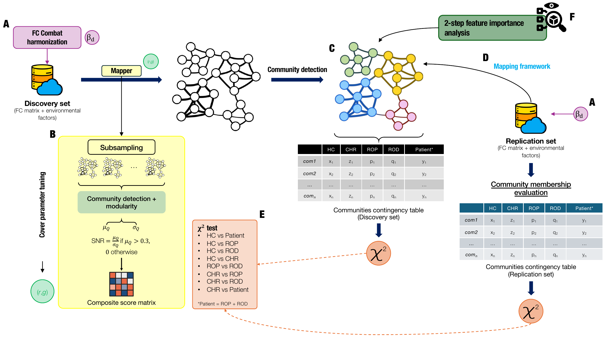

Find the structure
After harmonising fMRI connectivity across sites, Mapper turns participant similarities into a graph of overlapping groups. Its settings are tuned through unsupervised subsampling, without using diagnoses to build the map.
TOPOLOGICAL DATA ANALYSIS / PRONIA
An interpretable way to explore how environmental risk factors and brain connectivity relate to early mental-health conditions.
Can we reveal meaningful patterns across people, beyond diagnostic labels? This work explores the PRONIA cohort using environmental risk factors, resting-state fMRI connectivity, and their combination, spanning healthy controls, people at clinical high risk of psychosis, and people with recent-onset psychosis or depression.
After harmonising fMRI connectivity across sites, Mapper turns participant similarities into a graph of overlapping groups. Its settings are tuned through unsupervised subsampling, without using diagnoses to build the map.
Community detection identifies groups in the graph. A two-step feature-importance analysis connects these communities back to the original measurements, helping explain what shapes their organisation.
Independent participants are mapped onto the fixed discovery graph, without rebuilding it. Associations between graph communities and clinical groups are then compared across the two cohorts.

Environmental features showed the most reproducible associations between communities and clinical groups. The weaker associations from fMRI connectivity did not replicate, and simply combining the two feature sets did not improve on environmental data alone.
No feature set significantly separated recent-onset psychosis from depression, pointing towards patterns shared across diagnoses.
These are community-level associations, evaluated in participants assigned to a single community. Replication used an independent cohort from the same seven recruitment sites.